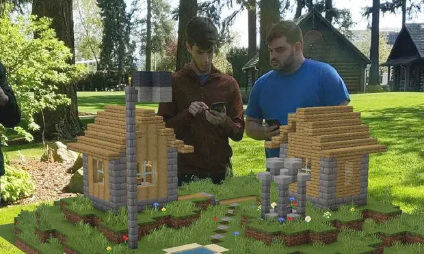

LA REALIDAD AUMENTADA HA ESTADO PROGRESANDO
Autor: Carlos Alberto Morales Torres

Definicion:
Como hemos visto en los ultimos años con las diferentes novedades que nos proporcionan las
empresas de videojuegos y de tecnologias para la comunidad del hogar, han querido implementar
nuevas aplicaciones, caracteristicas y novedades para conectar lo que es el mundo fisico con lo virual
haciendo uso de estas aplicaciones que nos resuelven problemas más rapidos, optimizacion eficaz y
produccion e imaginacion para hacer o crear cosas nuevas.